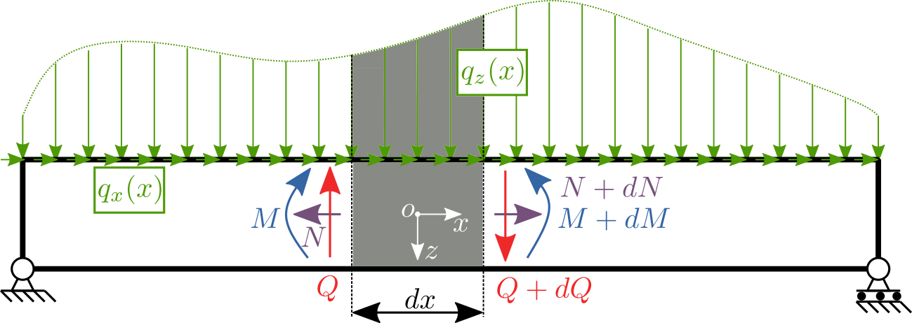
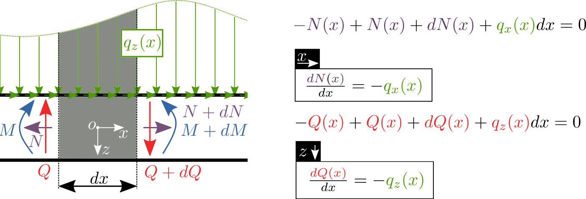
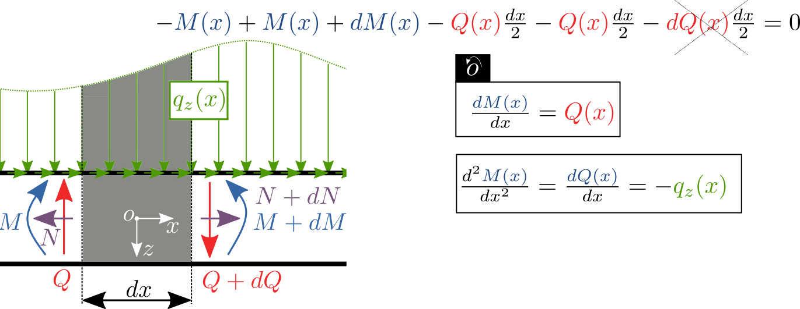
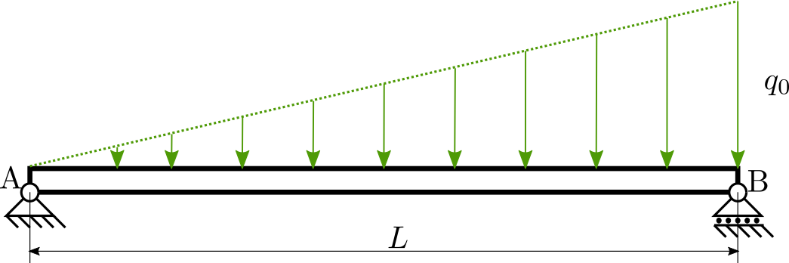
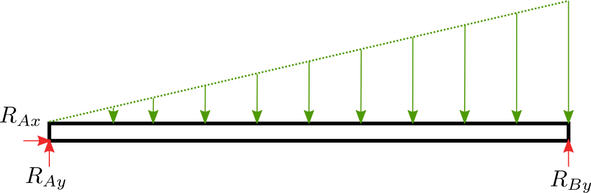

Vniřní statické účinky - Šwedlerovy věty (☕☕)¶
Metoda řezu je snadná, ale v případě obecného zatížení, které je popsané nějakou funkcí \(q(x)\), se stane rychle komplikovanou (výpočet těžiště uřízlé oblasti a obsah).

podle počtu stupňů volnosit zavedeme posouvající sílu \(N\), která je popisuje podélnou sílu v tělese. Dále zavedeme tečnou sílu \(Q\), která popisuje střižnou sílu a nakonec ohybový moment \(M\). Kladný směr volíme libovolně(opět platí, že musíme dodržovat po celý výpočet), ale doporučeno je zavádět orientaci podle obrázku. Pro známé spojité zatížení \(q_x(x)\) nebo \(q_z(x)\) vyřízněme nekonečně malý úsek a zaveďmě VSU podle zvyku. Silové rovnice rovnováhy pro \(N\) a \(Q\) vedou na diferenciální rovnici prvního řádu

Podobnou úvahu aplikujme pro výpočet momentové rovnice rovnováhy. Z obrázku je patrné, že násobení dvou malých členů (\(dQdx\)) budeme uvažovat za velmi malý přírustek a tak ho zanedbáme. Z momentové rovnice opět získáme diferenciální rovnici pro moment.

Je zřejmé, že mezi zatížením, silami a momentem existují vztahy, které popisují Šwedlerovy věty. Nalezené diferenciální rovnice lze řešit prostou separací proměnných a integrací, viz. následující příklad.
Příklad¶
Nalezněte průběh posouvající síly \(N\), tečné síly \(Q\) a ohybového momentu \(M\) pro nosník uložený a zatížený podle obrázku:

Konstanta zatížení \(q_0\)=5 N/m a vzdálenost podpor \(L\)=1 m.
Řešení¶
Nejdříve nosník uvolníme a napíšeme rovnice rovnováhy:

import sympy as sp
q0, L = sp.symbols('q0 L')
RAx, RAy, RBy = sp.symbols('RAx RAy RBy')
eq1 = sp.Eq(RAx, 0)
eq2 = sp.Eq(RAy + RBy - L * q0 / 2, 0)
eq3 = sp.Eq(RBy * L - L * q0 / 2 * 2 / 3 * L, 0)
reseni = sp.solve([eq1, eq2, eq3], [RAx, RAy, RBy])
RAx = reseni[RAx]
RAy = reseni[RAy]
RBy = reseni[RBy]
sp.pprint(RAx)
sp.pprint(RAy)
sp.pprint(RBy)
0
L⋅q₀
────
6
L⋅q₀
────
3
Aplikace Šwedlerovy věty¶
nejdříve definujeme funkční předpis pro zatížení:
x = sp.symbols('x')
Q = sp.symbols('Q', cls=sp.Function) # jako funkce
q = q0 / L * x
vztah zatížení \(q(x)\) a tečné síly \(Q(x)\) (diff. rovnice):
Řešením je:
drQ = sp.Eq(Q(x).diff(x), -q) # differencialni rovnice
res = sp.dsolve(drQ) # reseni differencialni rovnice
sp.pprint(res)
2
q₀⋅x
Q(x) = C₁ - ─────
2⋅L
konstantu \(C_1\) neznáme, ale umíme jí spočítat ze znalostí reakcí \(R\):
po dosazení \(C_1\), vidíme, že tečná síla \(Q(x)\) má předpis:
import numpy as np
L = 1.
q0 = 5.
x = np.linspace(0, L, 10)
Qnum = L * q0 / 6. - q0 * x ** 2 / (2 * L)
Nalezení momentu \(M\)¶
vztah tečné síly \(Q(x)\) a momentu \(M(x)\) (diff. rovnice):
M = sp.symbols('M', cls=sp.Function) # jako funkce
L, q0, x = sp.symbols('L q0 x') # sme si je prepsali na numeriku
Q = L * q0 / 6. - q0 * x ** 2 / (2 * L)
Řešením je:
drM = sp.Eq(M(x).diff(x), Q) # differencialni rovnice
res = sp.dsolve(drM) # reseni differencialni rovnice
sp.pprint(res)
⎛ 2 2⎞
q₀⋅x⋅⎝L - x ⎠
M(x) = C₁ + ──────────────
6⋅L
konstantu \(C_1\) neznáme, ale umíme jí spočítat ze znalostí reakcí \(M\):
L = 1.
q0 = 5.
x = np.linspace(0, L, 10)
Mnum = q0 * x * (L ** 2 - x ** 2) / (6 * L)
import matplotlib.pylab as plt
plt.xkcd()
#nastavime velikost obrazku
fig, ax0 = plt.subplots(figsize=(15, 5))
q = q0 / L * x
ax0.fill_between(x, Qnum, hatch="X", label="Q(x)");
ax0.plot(x, Qnum)
ax0.set_xlabel('x')
ax0.set_ylabel('Q(x)')
#nastavime velikost obrazku
fig, ax1 = plt.subplots(figsize=(15, 5))
ax1.fill_between(x, Qnum, hatch="X", label="Q(x)");
ax1.plot(x, Qnum)
ax1.set_xlabel('x')
ax1.set_ylabel('Q(x)')
fig, ax2 = plt.subplots(figsize=(15, 5))
ax2.fill_between(x, Mnum, hatch="X", label="M(x)");
ax2.plot(x, Mnum) # podle definice swed. vety, + znamenko y dolu
ax2.set_xlabel('x')
ax2.set_ylabel('M(x)')
Text(0, 0.5, 'M(x)')
Q